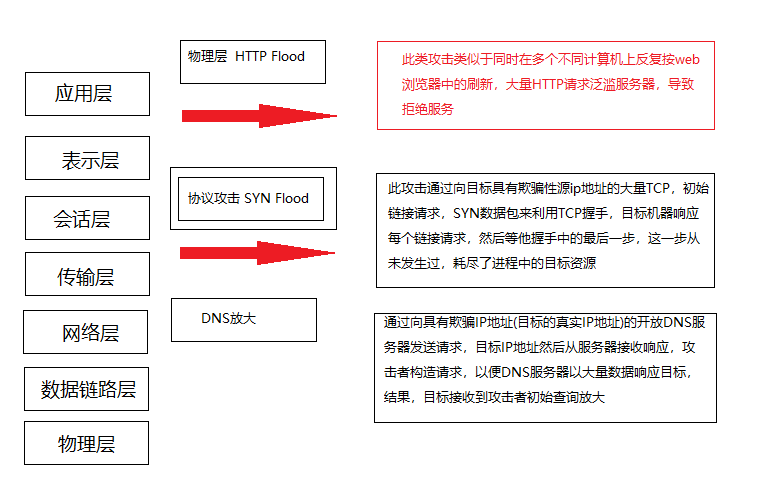
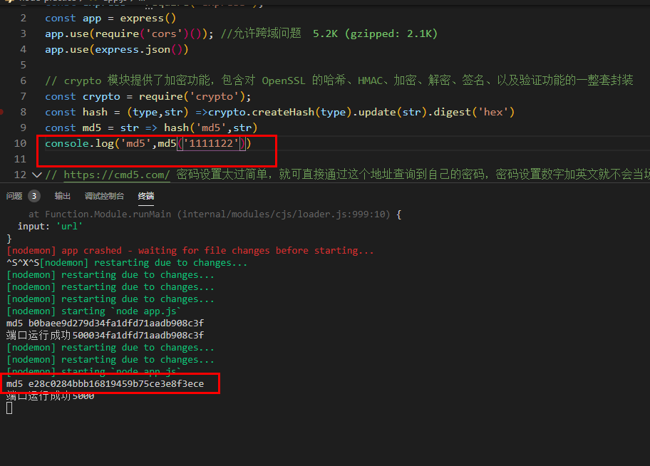
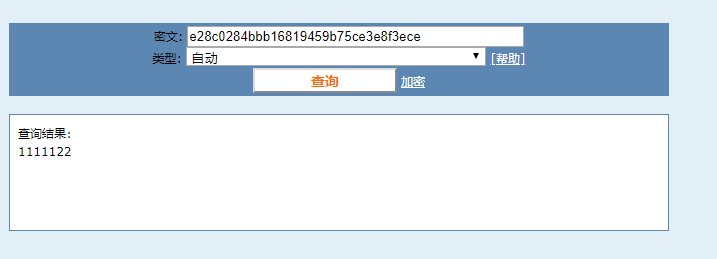
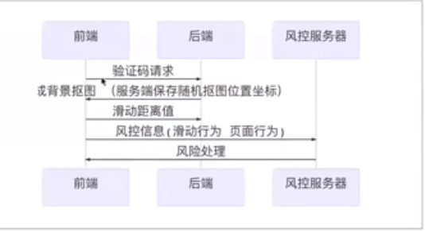
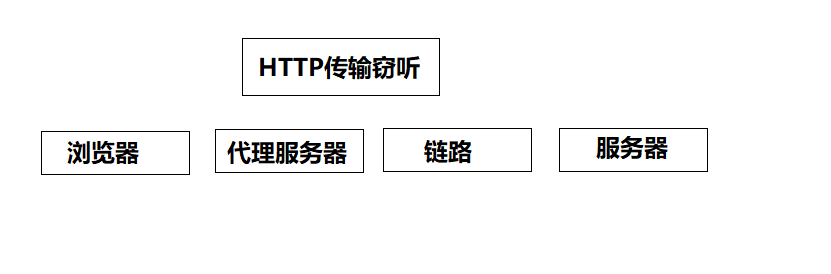
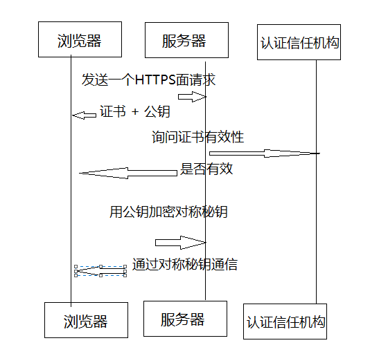

we安全对于web前端从事人员也是一个特别重要的一个知识点，也是面试的时候，面试官经常问的安全前端问题。掌握一些web安全知识，提供安全防范意识，今天就会从几个方面说起前端web攻击和防御的常用手段
常见的web攻击方式
1.XSS
XSS（Cross Site Scripting）跨站脚本攻击，因为缩写和css重叠，所以能叫XSS，跨脚本攻击是指通过存在安全漏洞的web网站注册用户的浏览器内非法的非本站点HTML标签或javascript进行一种攻击。
跨站脚本攻击有可能造成以下影响
1.利用虚假输入表单骗取用户个人信息
2.利用脚本窃取用户的cookie值，被害者在不知情况的下，帮助攻击者发送恶意请求
3.显示伪造的文章活图片
XSS攻击分类：
反射型 -url参数直接注入
普通 http://localhost:3000/?form-china
http://localhost:3000/?form=<scrupt>slert(1)</script> 如果有弹出，说明网站有漏洞，黑客就可以对网站发送攻击 获取cookie
存储型 存储到DB后读取注入
跨脚本注入，通过脚本注入代码。用户比如发送评论，用户的信息都会在黑客网站显示，就可以拿到你所需要的数据
XSS攻击的危害-Scripting能干啥就能干啥
Content-Security-Policy: default-src 'self' 只允许加载本站资源
Content-security-Policy: img-src https:// 只允许加载https协议图片
Content-security-Policy:child-src 'none' 不允许加载任何来源框架
例如 ctx.set('Content-security-Policy','default-src')黑名单
用户输入永远不可信任的，最普遍的做法就是转义输入的内容，对于引号，尖括号，斜杠进行转义
function escape(str) {
str = str.replace(/&/g, '&');
str = str.replace(/</g, '<');
str = str.replace(/>/g, '>');
str = str.replace(/"/g, '&quto;');
str = str.replace(/'/g, "'");
str = str.replace(/`/g, '`');
str = str.replace(/\//g, '/');
str = str.replace(/<\/script>/,'')
return str
}富文本来说，显然不能通过上面的办法来转义所有字符，因为这样会把需要的格式过滤掉，对于这种情况，通常采用白名单的办法，当然也可以通过黑名单过滤，但是考虑需要过滤的标签和标签属性是在太多，更加推荐使用白名单的方式
白名单
const xss = require('xss')
let html = xss('<h1 id="title">XSS demo</h1> <script>alert('xss')</script>')
转义成 <h1>XSS deom</h1>$lt;script$gt;alert('xss');</script$gt
HttpOnly Cookie
这是防止XSS攻击窃取用户cookie最有效的防御手段，web应用程序设置cookie时，将其属性设置为HttpOnly 就可以防止网页的cookie客户端恶意JavaScript窃取，保护用户cookie信息
设置方法：response.addHeader('Set-Cookie','uid=12;path=/; HttpOnly')2.CSRF
CSRF(Cross Site Request Forgery)，既跨站请求伪造，是一种常见的web攻击，他利用用户以登录的身份，在用户不知情的情况下，以用户的名字完成非法操作
1.用户登录了站点A，并在本地记录了cookie
2.在用户没有登录除站点A的情况下(也就是cookie生效的情况下)，访问了恶意攻击者提供引诱危险站点B(B站点需求访问站点A)。
3.站点A没有做任何CSRF防御
CSRF危害
1.利用用户登录状态
2.用户不知情
3.完成业务请求
4.盗取用户资金(转账，消费)
5.冒充用户发帖背锅
6.损害网站声誉
CSRF防御
禁止第三方网站带cookie ----有兼容性问题
Referer Check ----Https不发送referer
app.use(async(ctx,next)=>{ koa中间件实现
await next()
const referer = ctx.request.header.referer
console.log('Referer:',referer)
})
对登录注册设置验证码校验 3.点击劫持--clickjacking
点击劫持是一种视觉欺骗的攻击手段，攻击者将需要攻击的网站通过iframe嵌套方式嵌入自己的网页中，并将iframe设置为透明的，在页面中透露出一个按钮诱导用户点击 通过用于各种网站，使用iframe技术，图片点几进入一个其他网址，导致用户信息泄密
点击劫持防御
X-FRAME-OPTIONS 是一个HTTP响应头，在现代浏览器有一个很好的支持，这个HTTP响应头就是为了防御iframe嵌套的点击劫持攻击
该响应头有三个值可选，分别是
DENY:表示页面不允许通过iframe的方式展示
SAMEORIGIN:表示页面可以在相同域名下通过iframe的方式展示
ALLOW-FRO:表示页面可以在指定来源的iframe中展示
<style id="click-jack">
html{
display: none;
}
</style>
<script>
if(self == top) {
var style = document.getElementById('click-jack')
document.body.removeChild(style)
} else {
top.location = self.location
}
</script>
现在实现方式： ctx.set('X-FRAME-OPTIONS','DENY')
以上代码的作用就是当通过iframe的方式加载页面时，攻击者的网页直接不显示所有内容了
4.SQL注入
攻击者成功的向服务器提交恶意的SQL查询代码，程序在接收后错误的将攻击者的输入作为查询语句的一部分执行，导致原始的查询逻辑被改变，额外的执行了攻击者精心构造的恶意代码。
SELECT *
FROM test.user
WHERE username = 'xiaozhou'
AND password= '1' or '1' = '1'
老的后台数据库登录，黑客尝试使用1' or '1' = '1相等于密码，去登录
防御
所有的查询语句建议使用数据库提供的参数查询接口**。参数化的语句使用参数而不是将用户输入变量嵌入到SQL语句中，既不要直接拼接SQL语句，例如node.js中的mysqlis库query方法中的？占位符参数
错误的写法
cosnt sql = `
SELECT *
FROM test.user
WHERE username = '${ctx.reuqueset.body.username}'
AND password= '${ctx.reuqueset.body.password}' `
console.log('sql',sql)
res = await query(sql)
正确的写法
const sql = `
SELECT *
FROM test.user
WHERE username = ?
AND password= ? `
console.log('sql',sql)
res = await query(sql.[ctx.request.body.username，ctx.reuqueset.body.password]) 5.OS命令注入
os命令注入和sql注入差不多，只不过SQL注入是针对数据库的，而OS命令注入是针对操作系统的，OS命令注入攻击者指通过web应用,执行非法的操作系统命令达到攻击的目的，只要在你让那个调用Shell函数的地方就有存在被攻击的风险，倘若 调用shell时存在疏漏，就可以执行插入非法命令
以node.js为例，假如在接口中需要从github下载用户指定的repo
const exec = require('mz/child_process').exec;
let params = {/*用户输入的参数*/}
exec(`git clone ${params.repo} /some/path`)
如果传入参数是会怎么样
https://github.com/xx/xx.git && rm -fr /* &&
6.请求劫持
DNS劫持
顾名思义，DNS服务器(DNS解析各个步骤)被篡改，修改了域名解析的结果，使得访问的不是预期的ip
HTTPS劫持
运营商劫持，此时大概就只能升级为HTTPS了
7.DDOS

http://www.ruanyifeng.com/blog/2018/06/ddos.html 阮一峰文档说
DDOS不是一种攻击，而是一大类攻击的总称，它有几十张类型，新的攻击方法还不断发明出来，网站运行各个环节，都可以是攻击目标，只要把一个环节攻破，使得整个流程、跑不起来，就得到瘫痪服务的目的
其中，比较常见的是一种攻击是cc攻击，他就是简单粗暴地送来大量的正常请求，超出服务器的最大承受量，导致死机，
比如遭遇cc攻击，最多的时候全世界大概20多个ip地址轮流发出请求，每个地址请求量在每秒200次-300次，我看访问日志的时候，就觉得请求像洪水一样涌来，一眨眼就是一大堆，几分钟的时候，日志文件的体积就大了100MB,
常见的攻击方式
SYN Flood
此攻击通过目标发送具有欺骗性源ip地址的大量TCP 初始链接请求SYN数据包来利用TCP握手，目标机器相应每个链请求，然后等待握手中的最后一步，这一步从未发生过，耗尽了过程中的目标资源
HTTP Flood
此攻击类似于同时在多个不同计算机上反复按web浏览器中的刷新，大量HTTP请求泛滥服务器，导致拒接服务
防御手段
备份网站
备份网站不一定是全功能的，如果能做到全静态浏览，就能满足需求，最低限度应该可以显示公告，告诉用户，网站出看问题，正在全力抢修
HTTP请求拦截
硬件，服务器，防火墙 带宽扩容 + CDN 提高犯罪成本
防范方法
1.密码安全
泄露渠道
数据库被偷 服务器被入侵 通信被窃听 内部人员泄露 其他网站
防御密文-明文无法反推
严禁明文存储 单向变换 变换复杂度要求 密码复杂度要求 加盐（仿拆解） 雪崩效应-明文小幅度 密文剧烈变化 密文固定长度 md5 sha1
密码传输安全
https传输 频次限制 前端加密意义有限-传输层加密，不会泄露，但不代表不能登录
摘要加密的复杂度
md5反查,用node启动了一个本地服务，使用node提供的crypto对密码加密

虽然对密码加密了，但是我们设置的过于简单，通过md5反查，不到1秒就能查到密码

https://cmd5.com/ 密码设置太过简单，就可直接通过这个地址查询到自己的密码，密码设置数字加英文就不会当场查询出来，需要付费就可以查询出来了 如果设置数字，英文，字符串，就查询不到
2.人机验证 与 验证码
加强登录验证，防止黑客盗刷，导致服务器奔溃

滑动验证码实现原理
1.服务端随机生成抠图和带有抠图阴影的背景图片，服务端保存随机抠图位置坐标
2.前端实现滑动交互，将抠图拼在抠图阴影之上，获取用户滑动距离值。
3.前端将用户滑动距离值传入服务端，服务端校验误差是否在允许范围之内
3.HTTPS配置
HTTP弱点
危害 
窃听---密码 敏感信息
篡改--- 插入广告 重定向其他网站
时代趋势
目前全球互联网正在从HTTP向HTTPS的大迁移
Chrome和火狐浏览器将对不采用HTTPS加密的网站提示不安全
苹果要求所有APP通信必须采用HTTP加密
小程序强制要求服务器端使用HTTPS请求
特点
保密性(防泄密)
完整性(防篡改)
真实性(仿假冒)
什么是SSL证书
SSL证书由浏览器中受信任的根证书颁发机构在验证服务器身份后颁发，具有网站身份验证和加密传输双重功能
密码学
对称加密、
对称加密的一大缺点是秘钥的管理和分配，话句话说，如何把秘钥发送到需要解密你的消息的人的手里是一个问题，在发送秘钥的过程中，秘钥有很大的风险会被黑客们拦截，实现中通常的做法是将对称加密的秘钥进行对称加密，然后传送给需要他的人
不对称加密
产生一对秘钥 公钥负责加密 私钥负责解密 私钥无法解开说明公钥无效---抗抵抗 计算复杂对性能有影响
SSH公钥登录原理

密码口令登录
通过密码进行登录，主要流程为
1.客户端连接上服务器之后，服务器吧自己的公钥传给客服端
2.客服端输入服务器密码通过公钥加密之后传给服务器
3.服务器根据自己的私钥解密登录密码，如果正确那么久让客户端登录
公钥登录
公钥登录是为了解决每次登录服务都要输入密码的问题，流行使用RSA加密方案，主要流程包括
1.客户端生成RSA公钥和私钥
2.客户端将自己的公钥存放到服务器
3.客户端请求连接服务器，服务器将一个公钥加密随机字符串发送给客户端
4.客户端根据自己的私钥加密这个随机字符串之后再发送给服务器
5.服务器接收到加密后的字符串之后用公钥解密，如果正确就让客户端登录，否则拒绝
SSL证书分类
1.入门级DCSSL -域名有效，无门槛
2.企业级OVSSL-企业资质 个人认证
3.增强型EVSSL-浏览器给予绿色地址显示公司名字
4.Session管理
对于cookie的安全管理，其重要行是不言而喻的。特别是对于动态的wen应用，在如HTTP这样的无动态协议的之上，他们需要使用cookie来维护状态
Cookie标识
secure 这个属性告诉浏览器，仅在请求是通过HTTPS传输时，才传递cookie
HttpOnly 设置这个属性将禁止JavaScript脚本获取到这个cookie，这可以用来帮助防止跨站脚本攻击.
Cookie域
domain 这个属性用来比较请求URL中服务端的域名，如果域名匹配成功，或者是其子域名，则继续检查path属性
path 除了域名，cookie可用的url路径页可以被指定，当域名和路径都匹配时，cookie才会发送请求
expires 这个属性用来设置持久化的cookie，当设置了他以后cookie在指定的时间到达之前都不会过期
5浏览器安全控制
X-XSS-Protection 防止反射型XSS
Strict-Transport-security 强制使用HTTPS通信
CSP
HTTP响应头Content-Security-Policy 允许站点管理者在指定页面控制用户代理资源，除了少数例外，这条政策将极大的指定服务源，以及脚本端点，这将防止跨站脚本攻击
<meat http-equiv="Content-Security-Policy" content="default-src 'self'; img-src https://*; child-src 'nonde'; ">
爬虫技术
使用cheerio与http和https
puppeter 无头浏览器技术
反爬虫技术
Usre-Agent， Referer ，验证码，验证
单位时间的访问次数，访问量，限制
关键信息用图片混交
异步加载技术
前度技术限制
字体乱序加密技术
将网站的重要字体，将html部分生成图片
反爬虫最高境界就是Canvas的指纹
以上都是对前端安全一些总结，欢迎大佬指点一二